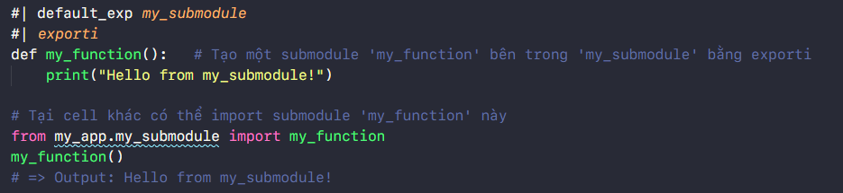

Directives
Magic comments
Trong nbdev, các directive (hay còn gọi là “magic comments”) là các câu lệnh đặc biệt được sọ dụng để thực hiện các chức năng nhất định trong quá trình phát triển và tạo tà i liệu cho package. Các directives bắt đầu bằng #| và được đặt ở đầu mỗi cell code trong Jupyter Notebook. Các directive được sọ dụng như tÃn hiệu cho Quarto trong quá trình tạo docs. các tÃn hiệu nà y cho biết Quarto nên xọ lý các ô như thế nà o và định dạng tà i liệu như thế nà o.
=> Tìm hiểu thêm vỠQuarto tại quarto.org
1. Cell Visibility 📓
Các directive sau đây để thực hiện các chức năng cho page, không áp dụng đối với file .py
- #| hide Để ẩn cell code và output trên page.
- #| echo: <true|false> Để ẩn cell code trên page và chỉ hiện output (false) , để hiện cả cell code và output trên page (true).
- #| output: <true|false|asis> Để set hiển thị output, ẩn (false), hiện (true), hoặc hiển thị kiểu raw markdown (asis) trên page.
- #| hide_line Để ẩn 1 dòng code trong cell notebook.
- #| filter_stream <keyword> Lọc các dòng chứa từ khóa cụ thể trong kết quả output của cell.
- #| code-fold: <show|true> Để thu gọn cell code.
2. Generating Source Code 📓
#| default_exp <name>Để tạo ra một Python package<name>.pytừ tệp notebook hiện tại khi export.
#| exportChỉ định một cell trong notebook sẽ được export đến file Python.py, ngoà i ra directive nà y cũng tạo documentation chi tiết tại cell đó trên page.
#| exportstương tự như#| exportnhưng hiển thị thêm docs thông quashowdoc.show_doc.
#| exportiĐể đánh dấu một hà m hay một đoạn code trong tệp notebook để được xuất ra như một phần của một module con riêng biệt, và dụ sau: 
3. Cell Execution 📓
#| exec_doc: Tạo docs trên cell code.#| eval: <true|false>Khi để false, cell code sẽ được ignore trong quá trình test thông qua commandnbdev_test.
4. Command
Bạn có thể chạy command nbdev_help trên terminal để xem danh sách đầy đủ các command có sẵn: